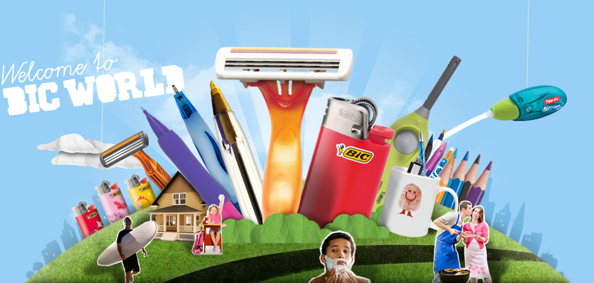

홈 > 브랜드 매거진 > 빅
빅
빅(BIC)은 1945년 마르셀 비크가 프랑스에서 설립한 일회용 소비재 브랜드다. 볼펜·라이터·면도기를 중심으로 저가·대량생산 일상용품을 만들며, 1950년 출시한 BIC Cristal 볼펜은 역사상 가장 많이 팔린 펜으로 꼽힌다.
산업 분야 홈·라이프스타일 · 공개 등급 편집 검수 · 브랜드 평가 4.7 ★


한눈에 보는 브랜드
빅(BIC)은 1945년 마르셀 비크가 프랑스에서 설립한 일회용 소비재 브랜드다. 볼펜·라이터·면도기를 중심으로 저가·대량생산 일상용품을 만들며, 1950년 출시한 BIC Cristal 볼펜은 역사상 가장 많이 팔린 펜으로 꼽힌다.
브랜드 관점
빅은 일회용 볼펜·라이터·면도기로 '단순하고 믿을 수 있는 소비재'라는 포지셔닝을 세계화한 브랜드다. 헤리티지, 핵심 제품, 모회사 구조를 함께 보면 홈·라이프스타일 안에서의 위치가 또렷해진다.
시작과 성장
빅(BIC)은 1945년 프랑스에서 볼펜의 생산 및 판매를 목적으로 설립되었다. 합리적인 가격과 고품질의 볼펜 생산을 시작으로 필기구에 혁명을 일으켰고, 1972년 이후 라이터와 면도기 등 제품의 다각화에 성공하였다.
현재 160개 국가에서 판매되고 있는 프랑스의 대표적인 글로벌 문구 및 생활용품 브랜드이다.
브랜드 아이덴티티
빅(BIC)의 창립자 마르셀 비슈(Marcel Bich)는 "좋은 상품을 저렴한 가격에 모든 사람에게 제공하겠다”라고 말했다. 빅(BIC)은 제품의 기본적인 기능과 합리적인 가격에 집중하여 실용적인 생활용품 브랜드로 그 가치를 인정받고 있다.
또한, 환경문제에도 적극적으로 앞장서며 빅(BIC)의 철학을 모든 제품에 녹여내고 있다.
확장 지식
프랑스 클리시에 본사를 둔 Société BIC이 운영하며, 볼펜·라이터·면도기를 3대 축으로 한다.
제품과 서비스
볼펜 등 필기구, 일회용 라이터, 면도기를 3대 축으로 한다. 문구·아트 제품 라인도 운영하며 전 세계에 대량 유통된다.
사람들
창업자는 마르셀 비크(Marcel Bich)와 에두아르 뷔파르다. 사명 BIC은 비크의 이름에서 따왔다.
현재 상태
타임라인
BI/CI 변천사
함께 읽을 브랜드
 홈·라이프스타일 · 자료 기반Cuisinella
홈·라이프스타일 · 자료 기반Cuisinella퀴진엘라(Cuisinella)는 1992년 프랑스 슈미트 그룹이 론칭한 맞춤형 주방·욕실·수납가구 브랜드다. 합리적 가격대를 겨냥한 슈미트 그룹의 자매 브랜드다.
 홈·라이프스타일 · 편집 검수알레시
홈·라이프스타일 · 편집 검수알레시알레시(Alessi)는 1921년 조반니 알레시가 이탈리아 오메냐에서 설립한 주방·생활용품 디자인 브랜드다. 금속 가공 공방에서 출발해 세계적 건축가·산업디자이너와...
옥소는 평범한 주방 도구를 사용자의 몸과 습관에 맞춘 디자인 문제로 바라본다. 제품의 차별성은 장식보다 손에 잡히는 감각, 사용 편의, 반복되는 동작을 세심하게 개선...
 홈·라이프스타일 · 자료 기반Kwantum
홈·라이프스타일 · 자료 기반Kwantum콴툼(Kwantum)은 1976년 시작한 네덜란드의 홈·인테리어 할인 소매 체인이다. 창·바닥·벽 커버링과 홈데코 제품을 합리적 가격에 판매한다.
16
16th Street
홈·라이프스타일 · 편집 검수16th Street16th Street는 2025년에 기록된 Placemaking 계열의 브랜드 아이덴티티 사례입니다. DNCO가 아이덴티티 작업의 디자이너로 기록되어 있습니다. 공개...
70
70 Hudson Yards
홈·라이프스타일 · 편집 검수70 Hudson Yards70 Hudson Yards는 2025년에 기록된 Property 계열의 브랜드 아이덴티티 사례입니다. DNCO가 아이덴티티 작업의 디자이너로 기록되어 있습니다. 공...
Cu
Curve Club
홈·라이프스타일 · 편집 검수Curve ClubCurve Club는 2023년에 기록된 Property 계열의 브랜드 아이덴티티 사례입니다. Wildish & Co.가 아이덴티티 작업의 디자이너로 기록되어 있습니...
OL
OLO Homes
홈·라이프스타일 · 편집 검수OLO HomesOLO Homes는 2024년에 기록된 Property 계열의 브랜드 아이덴티티 사례입니다. Bond가 아이덴티티 작업의 디자이너로 기록되어 있습니다. 공개 섹션 정...